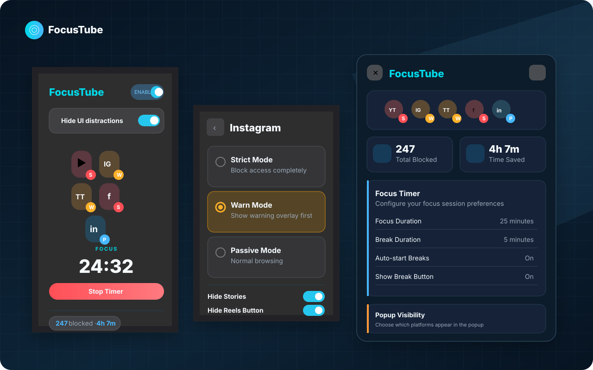
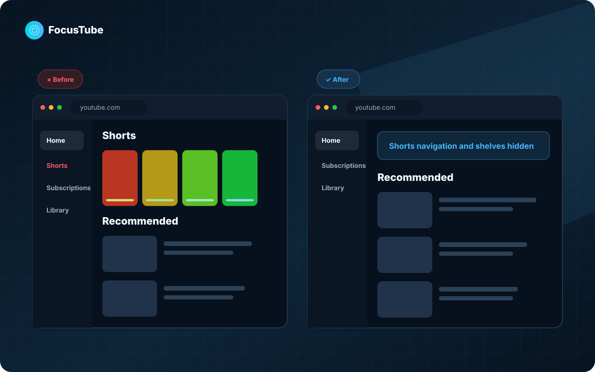

Focus and break timer
Start a focus session from the popup and configure break durations in settings.
Free and open-source browser extension
FocusTube removes Shorts, Reels and distracting feeds while leaving the useful parts of YouTube and social platforms available.
View source on GitHub · MIT licensed · no analytics

The difference
Whole-site blockers remove the useful page along with the distraction. FocusTube targets the distracting surface instead.

Supported platforms
Each platform has its own rules instead of one generic block list.
Block Shorts routes and hide Shorts navigation, shelves and selected subscription-page clutter.
Instagram ReelsBlock Reels and Explore paths, with separate controls for Reels navigation and Stories.
TikTokBlock common feed and video surfaces while keeping utility areas such as messages and settings available.
Facebook ReelsBlock Reels paths and hide targeted Reels navigation, Stories and People You Might Know suggestions.
LinkedIn feedHide the main feed and Add to your feed card without blocking jobs, messages or profiles.
How it works
Redirect away or cover the distracting surface before you continue.
Show a warning first, then let you choose whether to leave or continue.
Do not block the route. Visual hiding can still remove selected distracting entry points.
Privacy
FocusTube is designed to work locally. There is no account system and no project-controlled backend.
Secondary tools
The blocker is the main product. The timer and local estimates are there when you want a defined work session.
Start a focus session from the popup and configure break durations in settings.
Get a browser notification when a focus or break timer finishes.
See a blocked count and time-saved estimate stored locally in the browser.
Open source
FocusTube is MIT licensed and its source, tests, releases and security policy are public.